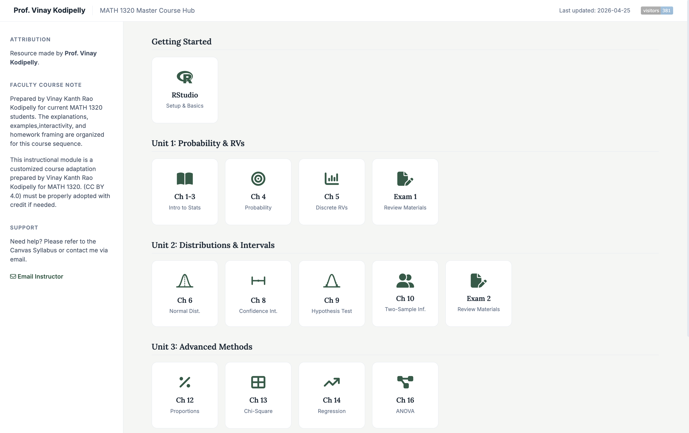
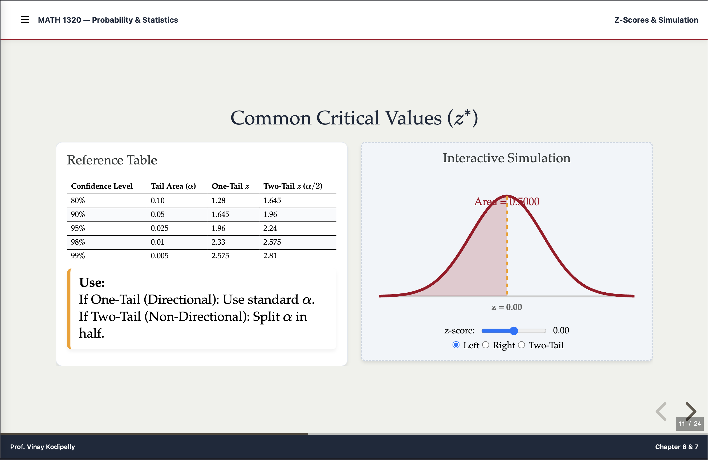

Professional Profile
"AI and technology are not here to replace teachers—they're here to amplify our impact. The real power of math education lies in using these tools to spark curiosity, deepen understanding, and make learning more human."
Mathematics, statistics, and data analytics educator — teaching since 2010 across six institutions in two countries. I make mathematics interactive, engaging, and applicable to real problems — building the instructional tools myself, in the open, at zero cost to students. My current work sits at the intersection of introductory math instruction, browser-native courseware, and AI-assisted pedagogy, and I spend the rest of my time coaching young mathematicians and training fellow educators to do the same.
Coordinates and teaches calculus, statistics, and linear algebra at the University of Missouri–St. Louis, including curriculum, assessment, and instructor support for multi-section coordinated courses.
Designs and ships browser-native instructional systems — interactive lecture frameworks, visualizers, and a locally-trained AI system for education — built for resource-constrained classrooms.
Delivers keynotes, workshops, and bootcamps for K-12 and university educators on generative AI in teaching, interactive courseware, and statistics with R — 300+ educators trained to date.
Coaches students in competition mathematics, organizes the regional Integration Bee, judges VEX Robotics and Math Olympiad events, and authored a competition-style algebra monograph.
Four lanes · one practice — each strengthens the others
Professional Development & Training
I work with departments, schools, districts, and organizations that want their educators confident with modern tools — not vendor demos, but hands-on sessions where every participant leaves with something built. Everything I teach runs in a browser tab, costs nothing to adopt, and is grounded in classroom practice honed since 2010.
- Generative AI for Teaching FacultyUsing AI systems to draft instructional content, design assessments, and personalize lessons — with honest guardrails on where the tools fail.
- Interactive Courseware in One Browser TabBuilding zero-cost, client-side interactive lectures and modules (HTML, Reveal.js, MathJax/KaTeX) without EdTech subscriptions or institutional procurement.
- Statistics & R BootcampsHands-on programming sessions equipping educators, professionals, and students with applied statistics and R, from first script to real analysis.
- Active Learning in MathematicsStructuring productive struggle, collaborative problem-solving, and process-over-answers classrooms — the methodology behind my coaching and coordinated courses.
If your department, school, or organization is exploring any of the above, write to kanth.vinay@outlook.com with a sentence about your context and audience — I read everything and reply with a concrete session outline.
Built Systems & Research
Open-source, browser-native, zero cost to students · dated facts, not statuses
- WBIS — Web-Based Instructional SystemDeployed Fall 2023 – Present Presented at 5+ National Conferences14 interactive Reveal.js slide decks covering a full introductory statistics curriculum, plus calculus and linear algebra modules. Zero-dependency and browser-native — no logins, no subscriptions, no install. Serves as the primary instructional framework for coordinated courses and is openly available to any educator.


- Democratizing Interactive STEM EducationFull Paper · EDULEARN26 · Palma, Spain"A Zero-Cost, Client-Side HTML Architecture for High-Density Lectures" — peer-reviewed research formalizing the WBIS architecture: why client-side rendering, open standards, and zero-dependency design make interactive STEM instruction reproducible anywhere.RefEDULEARN26 · Abstract 469
- Use the Screen for Gain, Not LossSingle-Author Publication · University of Southern Mississippi · 2017An early publication exploring screen-time and learning outcomes. Hosted in USM's Aquila institutional repository, with independent usage metrics tracked via Elsevier's PlumX.Impact193 Downloads · 302 PlumX Usage LinkAquila Repository ↗
- Educator OS — Locally-Trained AI System for EducationA client-side instructional AI framework: privacy-first, server-free, designed for resource-constrained classrooms where cloud AI is unaffordable or impermissible. Models fine-tuned on subject-specific pedagogy run locally in the educator's own environment.
Conference & Publication Record
Conference service: Program Committee Member, SITE 2026 (AACE), Philadelphia, PA.


Selected moments from the record — autoplays gently, pauses on hover, respects reduced-motion.
Student Testimonials
Landscape cells are 16:9 · portrait clips span two rows · short clips play silently like living photographs
In the News & Media Mentions, Videos
Highlights and features from national and institutional press.
Coaching, Competitions & Community
Designs and runs the regional collegiate Integration Bee: three rounds, live-rendered problems, sudden-death final.
Judge for regional VEX Robotics events and Math Olympiad competitions across the St. Louis area.
Mentors middle- and high-school students through national statistics project competitions and accelerated mathematics coursework.
Co-founder and director. Since 2018: teacher training, free non-traditional math courses (Animation Using Math, VR-Based Learning), and community programs across two countries.